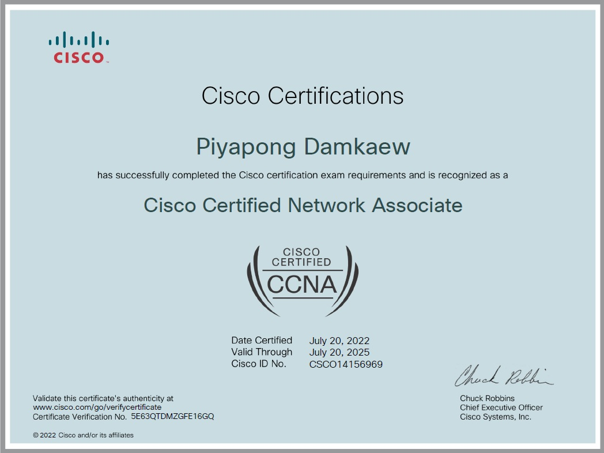
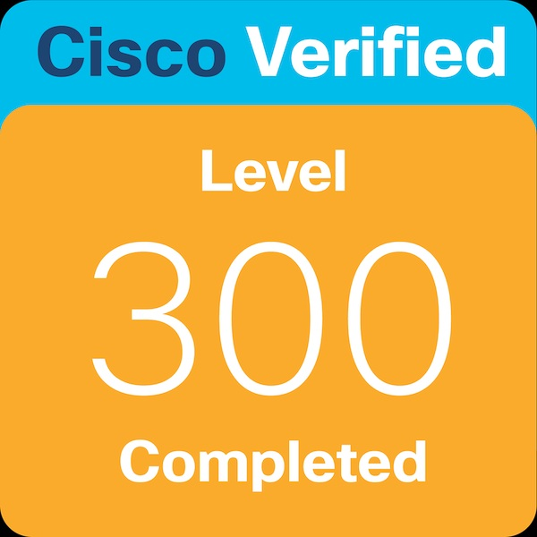

Certificates

Cisco Certified Network Associate (CCNA)
Cisco • Network Foundation

BOSIET + HUET with EBS
OPITO • Offshore Safety

OTDR & Fiber Testing
Optical Measurement

DWDM / Submarine Cable Workshop
Nokia / Vendor
Digital Credentials (Online Verification)
ใบรับรองดิจิทัลที่สามารถตรวจสอบได้จากแหล่งผู้ออกใบรับรองโดยตรง เช่น Credly (by Pearson)
Cisco Certified Network Associate (CCNA)
Issued by Cisco via Credly
View Credential

Implementing Cisco Enterprise Advanced Routing and Services (Level 300)
Issued by Cisco via Credly
View Credential
Training & Development
- Submarine Cable Field Operation — Power Re-config & Safety (HSE Daily Report)
- SLTE / DWDM λ 100G — Alarm Analysis, OSNR/BER Trend Monitoring
- OTDR Baseline & Route Verification — APG / SKL (Gulf of Thailand)
- NOC / CLS Coordination — Power Off/On Procedure & Service Test